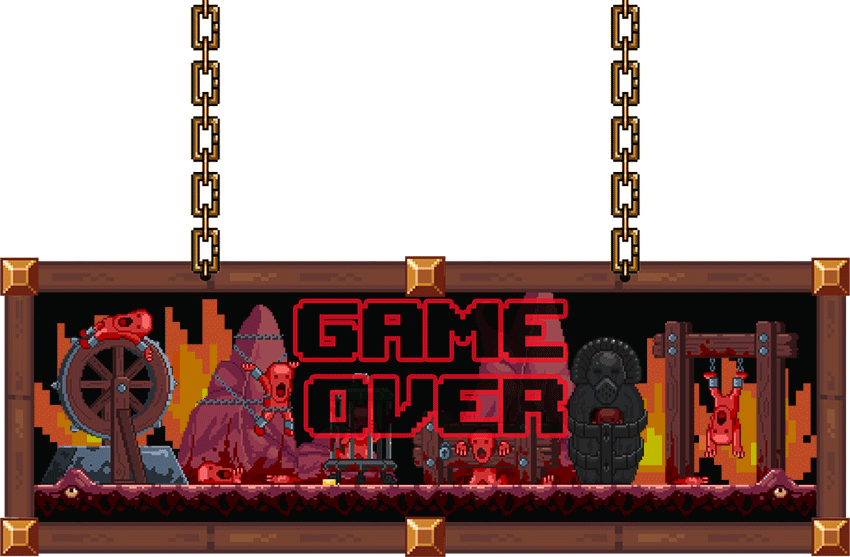

<!DOCTYPE html>
<html lang="en">
<head>

    <meta charset="UTF-8">
    <meta name="viewport" content="width=device-width, initial-scale=1.0">
    <meta http-equiv="X-UA-Compatible" content="ie=edge">
    <link rel="stylesheet" href="assets/CSS/style.css">
    <title>Postmortem</title>
    <script src="assets/JS/index.js"></script>

</head>

<body>
    
<div>
    
    
</div>
<!-- <div class="death"></div> -->
<!-- <div > 
    <p class = "text">-Where… where Am I ? I Might  be dead ? 
        -It doesn’t matter. Now, i'm stuck in this infernal maze, I have to find the exit and find the way to paradise. 
        But, I have to be careful because I have a long way ahead , my soul must reach paradise for redemption…So hurry Up ! 
        I am running out of time and don’t be caught by the devil 
        !</p>
</div> -->

</body>

</html>

